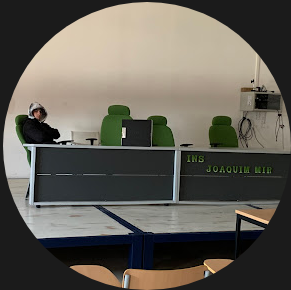

Programació
👨‍💻 M'encanta crear pà gines web i aplicacions. El meu llenguatge preferit és Python 👨‍💻.
Hem dic Oriol Vidal Gonzalez i sóc un estudiant de DAW. Aquà trobaràs una mica més sobre mi i els meus interessos.
A continuació UNA FOTO MEVA a les instalacións del centre:
👨‍💻 M'encanta crear pà gines web i aplicacions. El meu llenguatge preferit és Python 👨‍💻.
🚗 Gaudeixo molt del mon del motor, sigui cotxes, motos, o qualsevol artefacte amb un motor. 🚗
🏁 Sempre amb fixo en els cotxes que fan soroll! 🏁
🄠Sóc un surfista que vaig per les onades de la comarca del Garraf amb la meva taula. ğŸ„
📠694 056 224 ğŸ“